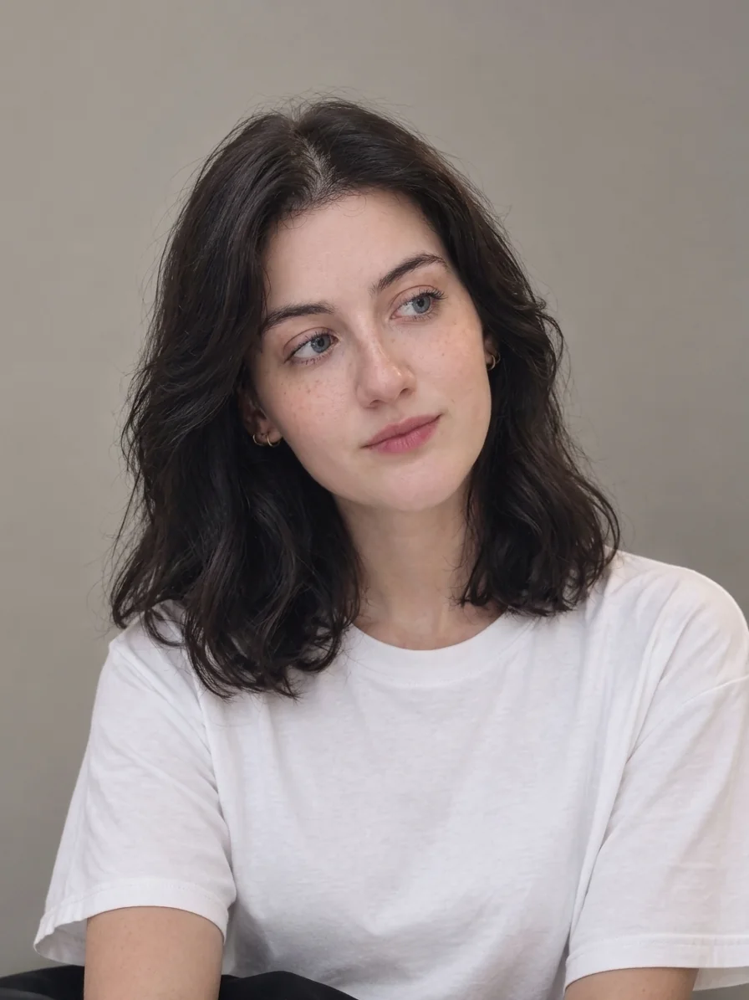
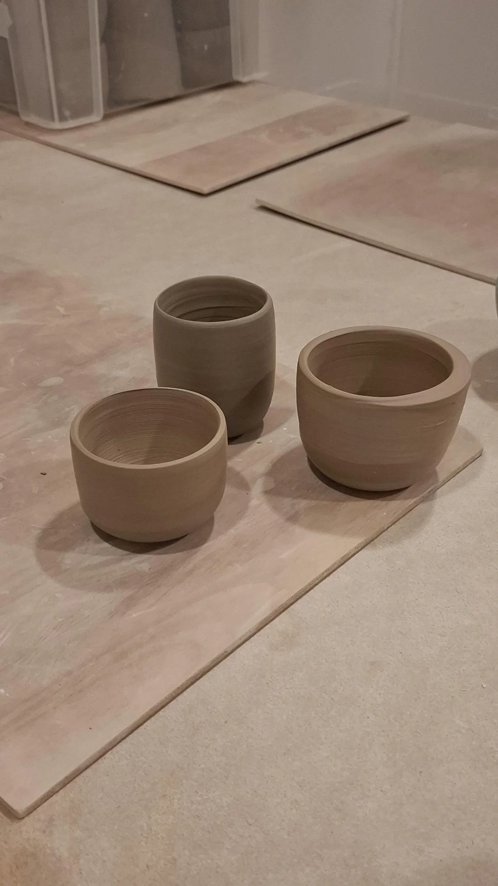
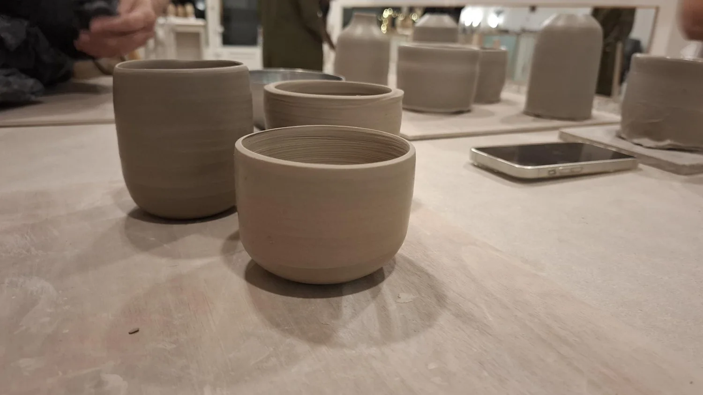

About me
Web developer turned product designer
I have always been creative. I drew and painted as a child, and I still paint when I find the time. I started a degree in 3D design for video games and animated films, then trained as a web developer.
Product design brought both together: the creativity I started with, in something concrete that people actually use. It suits me better.
AI is part of my daily work now. Some people are wary of it, I am not: I use these tools to work faster and more efficiently, as collaborators rather than replacements. At work I have access to several AI assistants, and I pick the right one for the task. The thinking, the decisions and the quality of what I deliver stay mine.
Between design and development
At ENGIE, I work on GPC 2.0, an executive reporting product built in Power BI. Many of the people involved were not familiar with Power BI, so the ideas and needs they brought did not always fit what the tool can do. Some components, for example, simply cannot be built in it.
That is where I step in. I help adapt those needs to Power BI: I explain to the designers what the tool allows, and to the developers what the design is meant to achieve, then we find a compromise or another way to reach the same goal. Having worked in development myself, I speak both languages.
I am a perfectionist, but an efficient one. When I am asked for a mock-up, I prioritize the information and the real need, and I structure the work so it stays readable.
I take on smaller dashboard redesigns on my own, to build autonomy and grow toward project management.
Tools I work with
My path
Made by hand
Before design, there was clay. At three or four years old, I already knew I wanted to become a potter. Life took me elsewhere, but the need to make things with my hands never left: I have always drawn, painted and create with my hands.
This September, I finally started wheel-throwing classes in a studio. I am a beginner, working on small pieces, and it nourishes me.
A piece takes weeks, sometimes months: first throwing the shape, then trimming it, then glazing. Each stage asks for patience, and for picturing the final piece long before it exists.
One of my pieces came off the wheel while I was trimming it. My first reflex would have been to throw it away. Instead, I reshaped it, gave it another chance and carried on. It now has a small scar, and with it a story before it is even finished. That makes it all the more endearing to me, and I cannot wait to see it glazed.


Care about the details, without chasing a perfection that does not exist.
Where I am heading
I am looking to join a product team where I can keep bridging design and development, and take on more ownership of projects.
Available from April 2027. Based in Tours, open to Paris and to relocation abroad.
View my resume